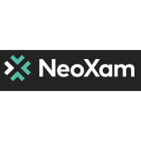

QA Tester/Engineer
Report Developer
4528 W Yale Ave.
Fresno, CA 93722
(559)-420-2518
ramymoula@gmail.com
NeoXam / QA Engineer 
I was assigned to 3 major project teams:
The first was the migration Scrum :
➔ Executed both functional and technical tests on the software.
➔ Post-migration testing and troubleshooting.
➔ Conducted post-migration automated testing.
The second was the regulatory reporting Scrum (GP3&4) :
➔ Interpreted work orders to meet client needs.
➔ Assisted in defining criteria and estimating resources needed for development backlogs.
➔ Prepared environments and example cases for testing in GP3&4.
➔ Executed manual testing and bug detection during team sprints.
➔ Prepared XML scripts and ran non-regression tests.
➔ Prepared SQL configuration scripts for consultant testing.
➔ Created reports using Jaspersoft Studio.
➔ Created and delivered itemized documentation of all work completed on projects.
The third was the Legal Scrum (DataHub) :
➔ Interpreted work orders to meet client needs.
➔ Assisted in defining criteria and estimating resources needed for development backlogs.
➔ Prepared DataHub work environments and test plans.
➔ Created financial table configurations for consultant testing.
➔ Conducted manual tests and bug detection on completed financial tables.
➔ Created and tested XML output.
➔ Created reports using Jaspersoft Studio.
➔ Created and delivered itemized documentation of all work completed on projects.
➔ Served as subject matter expert and coach to struggling co-workers.
➔ Served as consultant liaison during and post-project development.
Attijari Bank / Intern

➔ Addressed customer account inquiries.
➔ Handled customer check orders including notifying customers of order status and issuing checks.
➔ Served as an assistant loan banker.
➔ Served as an intern bank teller specializing in check and ACH deposits.